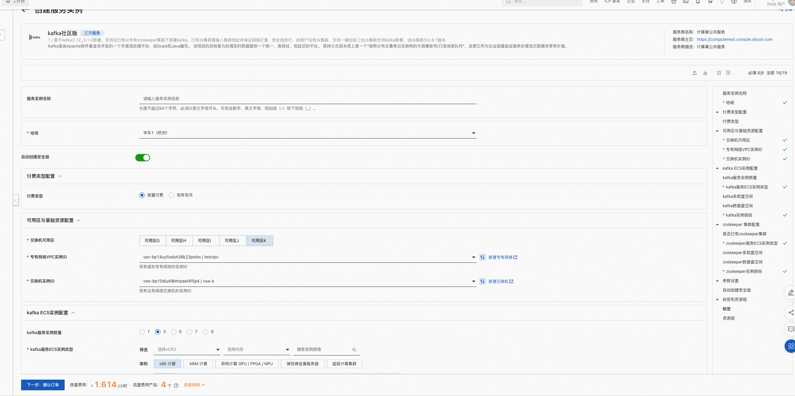
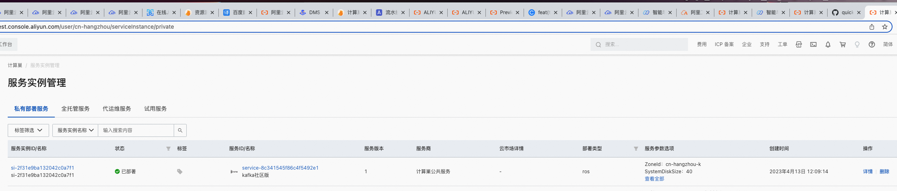
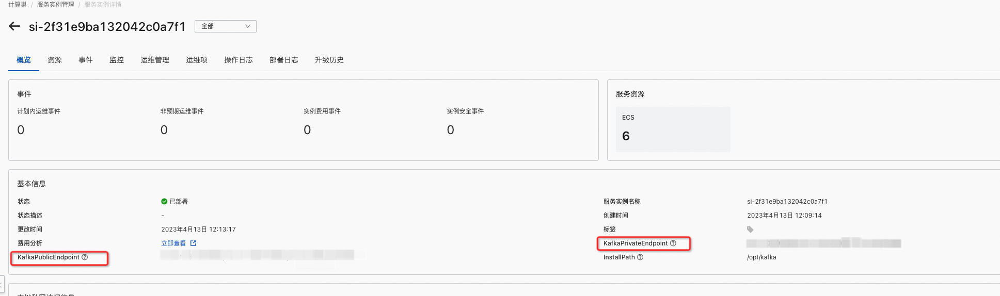

kafka社区版服务实例部署文档
概述
Kafka是由Apache软件基金会开发的一个开源流处理平台，由Scala和Java编写。 该项目的目标是为处理实时数据提供一个统一、高吞吐、低延迟的平台。 其持久化层本质上是一个“按照分布式事务日志架构的大规模发布/订阅消息队列”，这使它作为企业级基础设施来处理流式数据非常有价值。
计费说明
Kafka社区版在计算巢上的费用主要涉及：
Kafka集群: - 所选vCPU与内存规格 - 磁盘容量 - 机器数量
Zookeeper集群（如需要与Kafka同步部署）: - 所选vCPU与内存规格 - 磁盘容量
计费方式包括： - 按量付费（小时） - 包年包月
预估费用在创建实例时可实时看到。
部署架构
Kafka社区版部署时，可自选Kafka的broker数量。根据最佳实践，broker必须奇数个，最多支持9台。 同时，Kafka社区版部署时支持用户选择是否已有Zookeeper。如有，填入Zookeeper集群地址即可；如没有可以同步拉起一个3个节点的Zookeeper集群。
RAM账号所需权限
Kafka服务需要对ECS、VPC等资源进行访问和创建操作， 若您使用RAM用户创建服务实例，需要在创建服务实例前， 对使用的RAM用户的账号添加相应资源的权限。添加RAM权限的详细操作，请参见为RAM用户授权。所需权限如下表所示。
| 权限策略名称 | 备注 |
|---|---|
| AliyunECSFullAccess | 管理云服务器服务（ECS）的权限 |
| AliyunVPCFullAccess | 管理专有网络（VPC）的权限 |
| AliyunROSFullAccess | 管理资源编排服务（ROS）的权限 |
| AliyunComputeNestUserFullAccess | 管理计算巢服务（ComputeNest）的用户侧权限 |
| AliyunCloudMonitorFullAccess | 管理云监控（CloudMonitor）的权限 |
部署流程
部署步骤
单击部署链接，进入服务实例部署界面，根据界面提示，填写参数完成部署。
部署参数说明
| 参数组 | 参数项 | 示例 | 说明 |
|---|---|---|---|
| 服务实例名称 | test | 实例的名称 | |
| 地域 | 华北2（北京） | 选中服务实例的地域，建议就近选中，以获取更好的网络延时。 | |
| 付费类型配置 | 付费类型 | 按量付费 或 包年包月 | |
| 可用区与基础资源配置 | 交换机可用区 | 可用区I | 地域下的不同可用区 |
| 可用区与基础资源配置 | 专有网络VPC实例ID | vpc-xxx | 选择专有网络的ID |
| 可用区与基础资源配置 | 交换机实例ID | vsw-xxxx | 选择交换机ID。若找不到交换机, 可尝试切换地域和可用区 |
| kafka ECS实例配置 | kafka服务实例数量 | 3 | kafka的broker数量，可以根据业务压力选择 |
| kafka ECS实例配置 | kafka服务ECS实例类型 | AMD通用型g7a | 实例规格，可以根据实际需求选择 |
| kafka ECS实例配置 | kafka系统盘空间 | 40 | 系统盘空间，可以根据实际需求选择 |
| kafka ECS实例配置 | kafka数据盘空间 | 40 | 数据盘空间，可以根据实际需求选择 |
| kafka ECS实例配置 | kafka实例密码 | **** | 设置实例密码。长度830个字符，必须包含三项（大写字母、小写字母、数字、()`!@#$%^&*-+={}[]:;'<>,.?/ 中的特殊符号） |
| zookeeper 集群配置 | 是否已有zookeeper集群 | true | 根据实际情况选择 |
| zookeeper 集群配置 | zookeeper地址（有集群情况下） | 10.x.x.0:2181 | 多个地址用半角逗号隔开，例如 10.x.x.0:2181,10.x.x.1:2181 |
| zookeeper 集群配置 | zookeeper服务ECS实例类型（无集群情况下） | AMD通用型g7a | 实例规格，可以根据实际需求选择 |
| zookeeper 集群配置 | zookeeper系统盘空间（无集群情况下） | 40 | 系统盘空间，可以根据实际需求选择 |
| zookeeper 集群配置 | zookeeper数据盘空间（无集群情况下） | 40 | 数据盘空间，可以根据实际需求选择 |
| zookeeper 集群配置 | zookeeper实例密码（无集群情况下） | **** | 设置实例密码。长度830个字符，必须包含三项（大写字母、小写字母、数字、()`!@#$%^&*-+={}[]:;'<>,.?/ 中的特殊符号） |

验证结果
1、查看服务实例。 服务实例创建成功后，部署时间大约需要2分钟。部署完成后，页面上可以看到对应的服务实例。

2、通过服务实例访问Kafka

使用Kafka
请访问Kafka官网获取全部使用信息：Kafka试用文档
© 2009-2022 Aliyun.com 版权所有